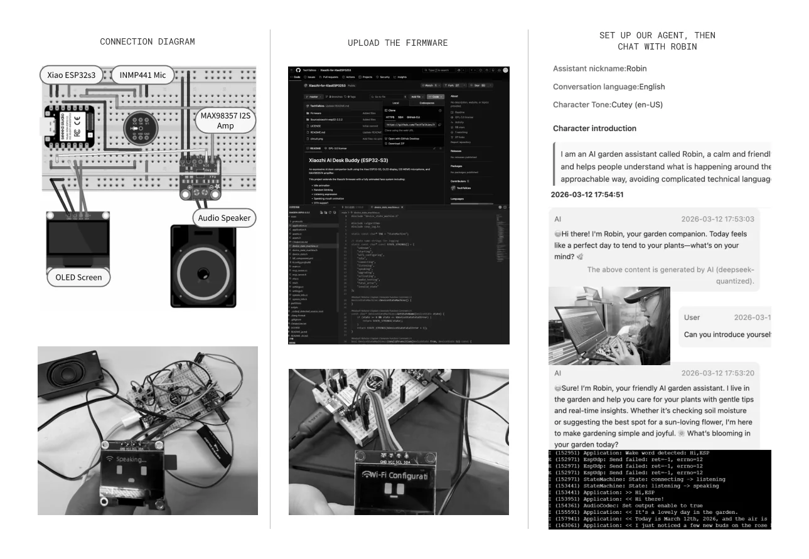

ROBIN connects computer vision, conversational intelligence and mobile robotics to help growers observe the site, understand plants, turn recommendations into clear next steps, and build a more emotional companion experience for home growing.
Team Lead / Product Strategy / AI Interaction Architecture / Robot Prototyping / CV Deployment / Cross-disciplinary Collaboration
01
OVERVIEW
From a robot concept to a validated AI product prototype
Time
12/2025–03/2026
Team
7-person interdisciplinary team
Context
Home growing and small community growing environments
Technology
ESP32-S3、YOLOv8、LLM 对话、嵌入式视觉
Outputs
Robot prototype, on-device crop recognition, voice hardware, App experience and system architecture
02
OPPORTUNITY & PRODUCT SYSTEM
Users do not lack more knowledge, but the ability to turn changes on site into action
Through research in community gardens and small growing environments, we found that experienced growers understand plants through continuous observation, while beginners often do not know what they should observe. ROBIN therefore does not aim to “grow for people”, but to make site conditions easier to see, explain and act on.
Hardware Development: From form exploration to a working robot
I developed the robot’s visual form, mechanical structure, electronic hardware and interaction in parallel, using small-step prototypes to continuously check assembly, movement and adaptability to the context.
The six-legged structure was selected because it can remain stable in irregular growing environments and provide a mobile carrier for the camera and future modules.
Computer Vision: Training proprietary crop data into on-device recognition capability
I participated in establishing the CV workflow from image collection, annotation, training and export to device deployment, and defined crop recognition results as structured observations that the subsequent dialogue system can read.

Conversational AI: Enabling the robot to communicate
The voice prototype connects the microphone, speaker, OLED, network service and Robin Persona. Dialogue is constrained by real, usable data and device capability: without sensor information, the system does not generate false real-time status.
05
APP
Interface: Turning recognition results into tasks users can understand and control
The App carries information that the robot cannot fully express on site: where an observation came from, why the AI makes this recommendation, who needs to confirm the next step, and what happened after the action was completed.
I delivered not only the form of a robot, but a product foundation that can continue to develop
Advanced the robot from concept and modelling to a physical prototype;
Established the CV data and device deployment workflow;
Completed the voice-interaction hardware and Agent Persona prototype;
Designed the product relationship between the robot, App and AI service;
Connected technology, design and business decisions within a seven-person interdisciplinary team.
ROBIN takes us from single-product design to systems design: understanding how hardware, models, data and services together form a trustworthy user experience.